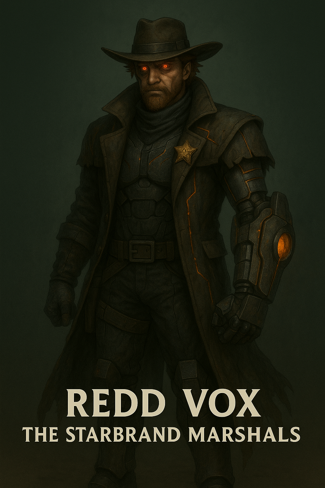

Redd Vox

Name & Alias: Redd Vox – The Pulse Arm
Age / Race / Role: Unknown / Kinetican – Modified Cyborg / Heavy Artillery, Tech Support
Appearance: Heavily armored Kinetican with a crimson cybernetic arm cannon, reinforced legs, and a visor HUD.
Affinities & Energy Types: Energy Cannons, Explosive Kinetic Force
Threat Tier: A+/S-Rank
Core Stats (0–10):
• Power: 9
• Speed: 6
• Technique: 7
• Intelligence: 7
• Defense: 9
• Aura Control: 6
Signature Abilities:
• Vox Cannon Burst
• Pulse Bunker Blast
• Arm Surge Detonation
• Kinetic Quake Grenade
• Heavy Barrage Cycle
Personality Summary: Loud, tactical, and always ready to fire. Holds deep camaraderie with his squad despite his bombastic nature.
Faction or Allegiances: Starbrand Marshals